Image and diagram gallery¶
This page is part of the main MkDoxy documentation. The images in the first section pass through Doxygen and MkDoxy during this site's build. The native diagrams in the second section are stored reference outputs generated by Doxygen and Graphviz.
See Images and diagrams for installation, configuration and current support limitations.
Images included by MkDoxy¶
These seven real image files are referenced by @image html in the ImageExample
class. Open the generated API page to
see them inside the actual API documentation. JPG and JPEG share one encoding.
| Input | Rendered image | Origin |
|---|---|---|
| SVG |  |
Authored vector source |
| PNG | 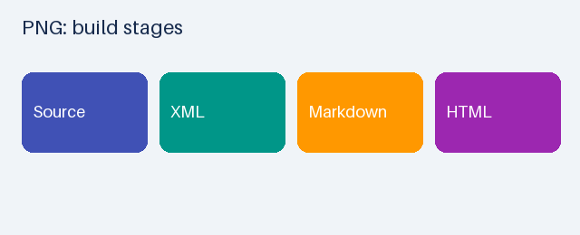 |
Drawing commands in the raster generator |
| JPG | 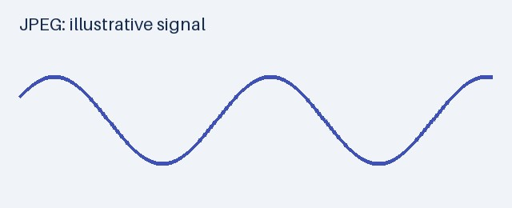 |
Raster generator; lossy encoding |
| JPEG | 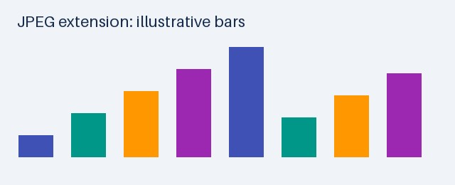 |
Raster generator; alternative JPEG extension |
| GIF | 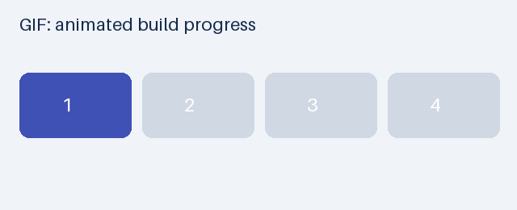 |
Four-frame animation from the raster generator |
| BMP | 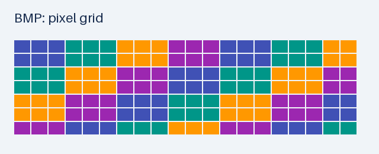 |
Raster generator; uncompressed encoding |
| WebP | 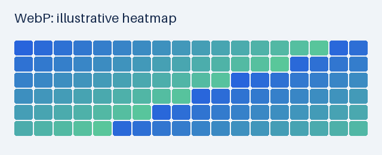 |
Raster generator; lossless encoding |
These are illustrative drawings, not measurements of project performance. Only regenerating raster inputs requires Pillow; ordinary documentation builds consume the stored files. No Graphviz installation is required for this section.
Actual Doxygen image comments
/**
* Build documentation from source code.
*
* The following assets are owned test fixtures. Doxygen copies these files;
* it does not generate their pixel content. Raster sources are generated by
* generate_assets.py; pipeline.svg is authored directly.
*
* SVG: resolution-independent pipeline diagram.
* @image html pipeline.svg "Documentation build pipeline"
*
* PNG: lossless build-stage illustration.
* @image html stages.png "Build stages"
*
* JPG: a lossy illustrative signal plot.
* @image html signal.jpg "Illustrative signal"
*
* JPEG: the alternative extension for the same image format.
* @image html bars.jpeg "Illustrative bars"
*
* GIF: an animated four-step build.
* @image html progress.gif "Build progress"
*
* BMP: an uncompressed pixel grid.
* @image html pixels.bmp "Pixel grid"
*
* WebP: a lossless illustrative heatmap.
* @image html coverage.webp "Illustrative heatmap"
*/
class ImageExample {
public:
/** Generate the API documentation. */
void build();
};
Raster image generator
"""Regenerate the owned raster fixtures; requires Pillow (not a test dependency).
Run this script explicitly when changing fixtures. Normal tests consume the
versioned images and require no Pillow installation. The SVG is authored directly.
"""
import math
from pathlib import Path
from PIL import Image, ImageDraw, ImageFont
OUTPUT = Path(__file__).parent / "images"
SIZE = (640, 260)
COLORS = ("#4051b5", "#009688", "#ff9800", "#9c27b0")
def canvas(title: str) -> tuple[Image.Image, ImageDraw.ImageDraw]:
image = Image.new("RGB", SIZE, "#f0f4f8")
draw = ImageDraw.Draw(image)
font = ImageFont.load_default(size=22)
draw.text((24, 16), title, fill="#172b4d", font=font)
return image, draw
def generate() -> None:
OUTPUT.mkdir(exist_ok=True)
image, draw = canvas("PNG: build stages")
for index, label in enumerate(("Source", "XML", "Markdown", "HTML")):
left = 24 + index * 152
draw.rounded_rectangle((left, 80, left + 138, 168), radius=12, fill=COLORS[index])
draw.text((left + 12, 112), label, fill="white", font=ImageFont.load_default(size=18))
image.save(OUTPUT / "stages.png", optimize=False)
image, draw = canvas("JPEG: illustrative signal")
points = [(x, 150 - int(55 * math.sin(x / 43))) for x in range(24, 616)]
draw.line(points, fill=COLORS[0], width=5)
image.save(OUTPUT / "signal.jpg", quality=90)
image, draw = canvas("JPEG extension: illustrative bars")
for index in range(8):
x = 26 + index * 74
height = 30 + (index * 31) % 130
draw.rectangle((x, 220 - height, x + 48, 220), fill=COLORS[index % 4])
image.save(OUTPUT / "bars.jpeg", quality=90)
frames = []
for active in range(4):
image, draw = canvas("GIF: animated build progress")
for index in range(4):
x = 24 + index * 152
draw.rounded_rectangle(
(x, 90, x + 138, 170), radius=12, fill=COLORS[index] if index <= active else "#cfd8e3"
)
draw.text((x + 52, 114), str(index + 1), fill="white", font=ImageFont.load_default(size=24))
frames.append(image)
frames[0].save(OUTPUT / "progress.gif", save_all=True, append_images=frames[1:], duration=650, loop=0)
image, draw = canvas("BMP: pixel grid")
for y in range(7):
for x in range(20):
color = COLORS[(x // 3 + y // 2) % 4]
draw.rectangle((24 + x * 29, 68 + y * 23, 50 + x * 29, 88 + y * 23), fill=color)
image.save(OUTPUT / "pixels.bmp")
image, draw = canvas("WebP: illustrative heatmap")
for y in range(6):
for x in range(18):
value = (x * 13 + y * 29) % 200
color = (40 + value // 4, 100 + value // 2, 220 - value // 3)
draw.rounded_rectangle((24 + x * 33, 68 + y * 27, 54 + x * 33, 92 + y * 27), radius=3, fill=color)
image.save(OUTPUT / "coverage.webp", lossless=True)
if __name__ == "__main__":
generate()
Diagrams generated by native Doxygen¶
The following are native Doxygen outputs embedded as static illustrations. Automatic rendering of these graph elements by MkDoxy is not implemented. The SVG and PNG variants were generated from the same C++ or text input. Normal site builds use the stored illustrations and do not run Graphviz.
| Diagram | SVG example | Raster variant |
|---|---|---|
| Inheritance | 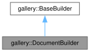 |
PNG |
| Collaboration | 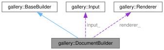 |
PNG |
| Includes | 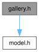 |
PNG |
| Included by | 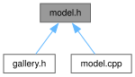 |
PNG |
| Calls |  |
PNG |
| Callers | 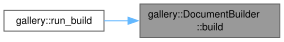 |
PNG |
Inline dot |
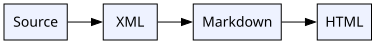 |
PNG |
External dotfile |
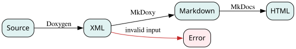 |
PNG |
Inline msc |
PNG | |
External mscfile |
PNG |


C++ declarations: inheritance and collaboration
#pragma once
namespace gallery {
/** Supplies a value to the documentation builder. */
class Input {
public:
/** Read the next input value. */
int read();
};
/** Converts a value to a rendered representation. */
class Renderer {
public:
/** Render the supplied value. */
int draw(int value);
};
/** Common interface for documentation builders. */
class BaseBuilder {
public:
/** Build documentation. */
virtual void build() = 0;
};
/**
* Uses Input and Renderer to build documentation.
* Doxygen derives inheritance, collaboration and call graphs from this code.
*/
class DocumentBuilder : public BaseBuilder {
Input input_;
Renderer renderer_;
public:
/** Read the input, then render its value.
* @callgraph
* @callergraph
*/
void build() override;
};
/** Read a value for the standalone build entry point. */
int read_value();
/** Render a value for the standalone build entry point. */
int render_value(int value);
/** Entry point used to demonstrate caller graphs. */
void run_build(DocumentBuilder &builder);
} // namespace gallery
C++ implementations: calls and callers
#include "model.h"
namespace gallery {
int Input::read() { return 42; }
int Renderer::draw(int value) { return value * 2; }
void DocumentBuilder::build() {
int value = input_.read();
renderer_.draw(value);
}
int read_value() { return 42; }
int render_value(int value) { return value * 2; }
void run_build(DocumentBuilder &builder) {
int value = read_value();
render_value(value);
builder.build();
}
} // namespace gallery
Inline Doxygen graph commands
#include "model.h"
/**
* @mainpage Native Doxygen diagram gallery
*
* These diagrams are generated by Doxygen, not copied from pre-existing image files.
* Native Doxygen graph rendering is separate from MkDoxy's image-copy feature.
*
* @section inline_dot Inline Graphviz definition
* @dot
* digraph Build {
* rankdir=LR;
* node [shape=box, style=filled, fillcolor="#eef2ff", fontname="sans-serif"];
* Source -> XML -> Markdown -> HTML;
* }
* @enddot
*
* @section dot_file External Graphviz file
* @dotfile states.dot "Build states"
*
* @section sequence Inline sequence chart
* @msc
* client,worker,cache;
* client=>worker [label="build()"];
* worker=>cache [label="lookup(source hash)"];
* cache>>worker [label="miss"];
* worker>>client [label="HTML + assets"];
* @endmsc
*
* @section sequence_file External sequence chart
* @mscfile exchange.msc "Review sequence"
*/
External Graphviz definition
digraph States {
rankdir=LR;
node [shape=box, style="rounded,filled", fillcolor="#e0f2f1", fontname="sans-serif"];
Source -> XML [label="Doxygen"];
XML -> Markdown [label="MkDoxy"];
Markdown -> HTML [label="MkDocs"];
XML -> Error [label="invalid input", color="#c62828"];
Error [fillcolor="#ffebee"];
}
External sequence chart definition
msc {
contributor,ci,maintainer;
contributor=>ci [label="push contribution"];
ci>>contributor [label="tests pass"];
contributor=>maintainer [label="request review"];
maintainer>>contributor [label="approve / feedback"];
}
Native Doxygen configuration
PROJECT_NAME = "Native Doxygen diagrams"
OUTPUT_DIRECTORY = output
INPUT = .
FILE_PATTERNS = *.h *.cpp
EXTRACT_ALL = YES
EXTRACT_PRIVATE = YES
GENERATE_HTML = YES
GENERATE_XML = YES
GENERATE_LATEX = NO
HAVE_DOT = YES
DOT_IMAGE_FORMAT = svg
DOT_CLEANUP = NO
DOT_NUM_THREADS = 1
CLASS_GRAPH = YES
COLLABORATION_GRAPH = YES
CALL_GRAPH = YES
CALLER_GRAPH = YES
INCLUDE_GRAPH = YES
INCLUDED_BY_GRAPH = YES
SOURCE_BROWSER = YES
INLINE_SOURCES = YES
REFERENCES_RELATION = YES
REFERENCED_BY_RELATION = YES
DOTFILE_DIRS = .
MSCFILE_DIRS = .
QUIET = YES
WARN_IF_UNDOCUMENTED = NO
Reproduce the examples¶
The setup and regeneration instructions explain how to build the standalone gallery and refresh the static diagrams. Regenerating them requires Graphviz; their output can vary with tool and font versions. PlantUML and Dia examples are not generated here.